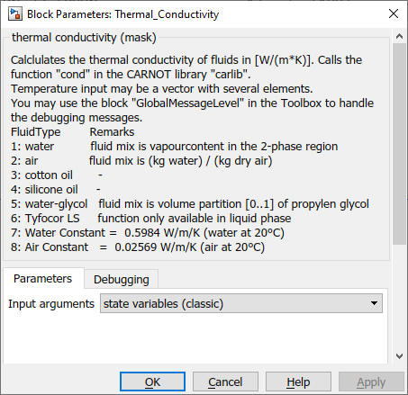
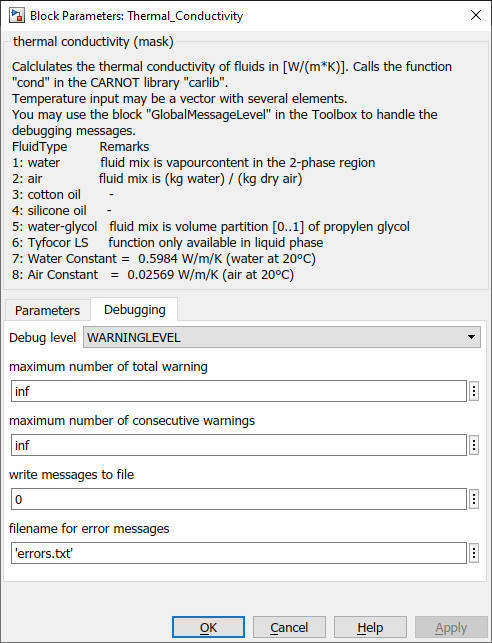

Thermal_Conductivity
Path: CARNOT/Basic/Material_Properties
Purpose:
This block calculates the thermal conductivity in W/m/K of the specified material.
Description:
This block calculates the thermal conductivity in W/m/K according to the inputs.
The block calls up the function thermal_conductivity
in the CARNOT Carlib Library
where the calculation is carried out. The material properties functions can also
be called directly from the command window by typing
thermal conductivity (temperature, pressure, fluid_type, fluid_mix)
in the Matlab Command Window. Instead of the italic variables the actual value
of the respective property has to be entered.
For more information about the function type:
help thermal conductivity
The valid range is for the respective value is:
| fluid_ID | fluid | phase | temperature | pressure |
| 1 | water | vaporous | 50 °C < T < 400 °C | 10 kPa < p < 2 MPa |
| 1 | water | liquid | 0 °C < T < 800 °C | 0.1 MPa < p < 10 MPa |
| 2 | air | gaseous | 0 °C < T < 400 °C | p = 1013 hPa |
| 3 | cotton oil | liquid | 0 °C < T < 250 °C | p = 1013 hPa |
| 4 | silicone oil | liquid | 0 °C < T < 250 °C | p = 1013 hPa |
| 5 | water-gylcol | liquid | -20 °C < T < 100 °C | p = 1013 hPa |
Input:
| T | : | temperature (scalar or vector) in °C |
| p | : | pressure in Pa |
| Fluid_Type | : | see definition of CARNOT fluid types |
| Fluid_Mix | : | see definition of CARNOT fluid mixtures |
Output:
| cond | : | thermal conductivity in W/m/K |
Parameters and Dialog Box:

You can choose the inputs to be the :

Use the GlobalMessageLevel block to handle the debugging messages.
Examples:
Open the example explorer from the Matlab command window
ExampleBrowser
or load the examples via the CARNOT library.
Characteristics:
| Direct Feedthrough | : | Yes |
| Sample Time | : | Inherited from driving block |
| Vectorized | : | No |